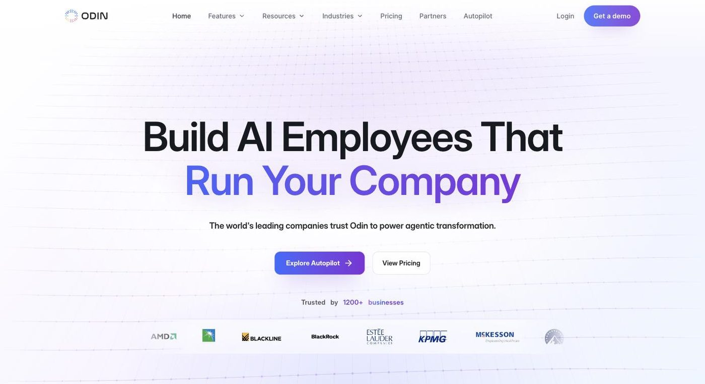

Odin AI
Enterprise AI agents that automate cross-system business workflows

- Category
- Productivity & Automation
- Pricing
- Pro is $20 per seat per month. Growth Accelerator is $15,000 one-time (30-day deployment) and Scale Accelerator is $30,000 one-time (60-day deployment). Larger custom enterprise deployments are not priced publicly — contact sales. The site's $150k–$500k+ figure is its comparison for a typical custom-built route, not an Odin price.
- Best for
- Best for mid-size to large companies automating cross-department work across systems like Salesforce, SAP or ServiceNow, and willing to pay for implementation help.
- Official site
- getodin.ai
- Last checked
- 2026-10-29
Odin AI is a strong fit for mid-size and large organisations that want agents wired into ERP, CRM and ticketing systems with vendor help to build them; solo users and small teams should skip it, since a $20 per seat plan and five-figure setup packages are overkill for light automation. It is an enterprise agentic platform whose Autopilot turns a plain-English prompt into an agent, alongside a no-code workflow Automator, chat support agents, a knowledge base, an AI notetaker, a chatbot builder and on-prem deployment.
The homepage lists 200+ integrations, with logos for Oracle, SAP, Workday, ServiceNow, Teams, Slack, Salesforce and others, plus managed cloud, self-hosted and customer-environment deployment (including air-gapped on-prem). It shows HIPAA, GDPR, SOC 2, ISO 27001 and CCPA badges; we did not verify the audit reports themselves.
Commercially it mixes a normal per-seat plan with services-style Accelerator packages that bundle custom-built agents and a dedicated engineer. The homepage contrasts the $15k Accelerator with a typical custom route of $150k to $500k+; that is a comparison, not Odin's own price list. Independent reviews were not found.
Best for mid-size to large companies automating cross-department work across systems like Salesforce, SAP or ServiceNow, and willing to pay for implementation help. Not for individuals or small teams wanting cheap, lightweight automation, for buyers who want a pure self-serve tool with no services component, or for anyone who needs published prices for large custom deployments.
Key features
Autopilot builder
Converts natural-language descriptions of a task into a working, multi-step automated workflow without requiring the user to write code.
Wide integration catalog
Native connections to 200+ business applications (including Salesforce, SAP, Oracle, and ServiceNow) plus API and webhook access for custom connections.
Multi-model AI access
Agents can draw on several underlying language models with automatic routing, rather than being tied to a single provider.
Enterprise knowledge search
A shared knowledge base lets agents and users search across connected organizational data from one place.
Flexible deployment
Can run as a managed cloud service, be self-hosted, or be installed directly within a customer's own environment for stricter data control.
Governance and security controls
SAML/SSO, audit logs, and team-wide privacy settings are included, alongside stated compliance with SOC 2 Type II, HIPAA, GDPR, and ISO 27001.
Pricing breakdown
Pro
- Autopilot, unlimited pre-built agent templates, multi-step workflows, smart tables with triggers
- Frontier models with automatic routing and fallback, plus bring-your-own-key custom LLM
- 200+ native integrations, API, webhooks, MCPs, skills
- Shared knowledge base, enterprise search, SAML/SSO, audit logs, usage analytics, priority support
Growth Accelerator
- Two custom-built AI employees
- Full Pro platform access
- Dedicated implementation engineer and account manager
- One core use case designed and built; 30 days post-launch monitoring
Scale Accelerator
- Four custom-built AI employees
- Full Pro platform access
- Dedicated engineer, account manager and solution architect
- Multi-department workflows with unlimited tool integrations; 60 days post-launch monitoring; strategic AI roadmap session
Custom enterprise
- Larger bespoke deployments, on-prem or customer environment
Pros and cons
Pros
- Wide integration catalog (200+) covering major ERP, CRM, ITSM and collaboration tools reduces custom connector work.
- Autopilot lets non-developers describe a process in plain English and get a runnable agent.
- Deployment flexibility from managed cloud to air-gapped on-prem suits regulated industries.
- Accelerators have fixed, published prices and timelines, which is rarer than quote-only enterprise AI.
Cons
- Costs climb fast: per-seat fees plus $15,000 to $30,000 packages for anything beyond templates.
- It is unclear from the pricing page whether seat fees stack on top of Accelerator packages.
- Large custom engagements are not priced publicly.
- No independent review data found; compliance badges were not independently verified.
Alternatives to Odin AI
Frequently asked questions
How much does Odin AI cost?
Pro is $20 per seat per month. Growth Accelerator is $15,000 one-time and Scale Accelerator $30,000 one-time. Bigger custom deployments: pricing not public — contact sales.
Is there a free plan?
The pricing page lists no free plan, only Pro and the two Accelerator packages.
Do I need the Accelerator?
No. Pro is self-serve with templates and the Autopilot builder; Accelerators add custom-built agents and a dedicated engineer for a fixed price.
How does it compare with Zapier?
Zapier is a cheaper, self-serve app-to-app automation tool; Odin targets enterprise agents with knowledge bases, on-prem options and implementation services.
Ready to try Odin AI?
Head to the official site to explore pricing and start a free trial where available.
Visit Odin AI →